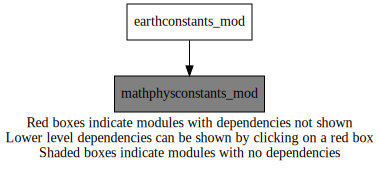
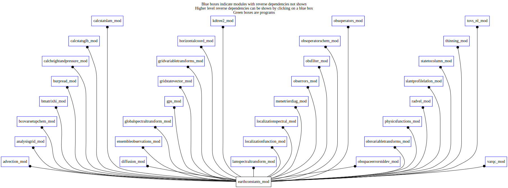

Dependency Diagrams:
 Direct Dependency Diagram¶
 Reverse Dependency Diagram¶
Description
MODULE earthConstants_mod (prefix=’ec’ category=’8. Low-level utilities and constants’) Prefixes:
ec_ (Earth constants), for miscellaneous values from diverse sources
- or
ec_wgs_ (World Geodetic Syatem) when they are explicitly from WGS84 specification.
Quick access
- Variables
ec_jyear,ec_omega,ec_r1sa,ec_ra,ec_rayt,ec_rday,ec_rg,ec_romega,ec_sidday,ec_sidyear,ec_wgs_1f,ec_wgs_a,ec_wgs_b,ec_wgs_ba,ec_wgs_c,ec_wgs_c20,ec_wgs_e,ec_wgs_e2,ec_wgs_efocal,ec_wgs_elinear,ec_wgs_eprime,ec_wgs_eprime2,ec_wgs_f,ec_wgs_g,ec_wgs_gammae,ec_wgs_gammam,ec_wgs_gammap,ec_wgs_gm,ec_wgs_gm_kep,ec_wgs_gma,ec_wgs_gmprime,ec_wgs_h,ec_wgs_m,ec_wgs_mass,ec_wgs_omega,ec_wgs_omegaprime,ec_wgs_omegastar0,ec_wgs_omegastar1,ec_wgs_pmi_a,ec_wgs_pmi_b,ec_wgs_pmi_c,ec_wgs_r1,ec_wgs_r2,ec_wgs_r3,ec_wgs_tngk,ec_wgs_u0Needed modules
mathphysconstants_mod: MODULE MathPhysConstants_mod (prefix=’mpc’ category=’8. Low-level utilities and constants’)Variables
- earthconstants_mod/ec_jyear [real,parameter]¶
Standard (Julian) year
- earthconstants_mod/ec_omega [real,parameter]¶
Approximation, see for instance ec_wgs_Omega below.
- earthconstants_mod/ec_r1sa [real,parameter]¶
1.56955588945241177170D-07 ! Modified to explicitly 1/ec_ra
- earthconstants_mod/ec_ra [real,parameter]¶
ECMWF topographical mean radius (Authalic radius, eg ec_wgs_R2,+average topography)
- earthconstants_mod/ec_rayt [real,parameter]¶
Another topographical mean (NOAA)
- earthconstants_mod/ec_rday [real,parameter]¶
Standard day
- earthconstants_mod/ec_rg [real,parameter]¶
…616 ? This is Lambert IGF at 45 lat (g45). The WMO standard for conversions is …665.
- earthconstants_mod/ec_romega [real,parameter]¶
Angular rotation (approx., again)
- earthconstants_mod/ec_sidday [real,parameter]¶
- earthconstants_mod/ec_sidyear [real,parameter]¶
Not really sidereal year, seems rather anomalistic year (odd).
- earthconstants_mod/ec_wgs_1f [real,parameter]¶
- earthconstants_mod/ec_wgs_a [real,parameter]¶
- earthconstants_mod/ec_wgs_b [real,parameter]¶
- earthconstants_mod/ec_wgs_ba [real,parameter]¶
- earthconstants_mod/ec_wgs_c [real,parameter]¶
- earthconstants_mod/ec_wgs_c20 [real,parameter]¶
- earthconstants_mod/ec_wgs_e [real,parameter]¶
- earthconstants_mod/ec_wgs_e2 [real,parameter]¶
- earthconstants_mod/ec_wgs_efocal [real,parameter]¶
- earthconstants_mod/ec_wgs_elinear [real,parameter]¶
- earthconstants_mod/ec_wgs_eprime [real,parameter]¶
- earthconstants_mod/ec_wgs_eprime2 [real,parameter]¶
- earthconstants_mod/ec_wgs_f [real,parameter]¶
- earthconstants_mod/ec_wgs_g [real,parameter]¶
- earthconstants_mod/ec_wgs_gammae [real,parameter]¶
- earthconstants_mod/ec_wgs_gammam [real,parameter]¶
- earthconstants_mod/ec_wgs_gammap [real,parameter]¶
- earthconstants_mod/ec_wgs_gm [real,parameter]¶
- earthconstants_mod/ec_wgs_gm_kep [real,parameter]¶
- earthconstants_mod/ec_wgs_gma [real,parameter]¶
- earthconstants_mod/ec_wgs_gmprime [real,parameter]¶
- earthconstants_mod/ec_wgs_h [real,parameter]¶
- earthconstants_mod/ec_wgs_m [real,parameter]¶
- earthconstants_mod/ec_wgs_mass [real,parameter]¶
- earthconstants_mod/ec_wgs_omega [real,parameter]¶
- earthconstants_mod/ec_wgs_omegaprime [real,parameter]¶
- earthconstants_mod/ec_wgs_omegastar0 [real,parameter]¶
- earthconstants_mod/ec_wgs_omegastar1 [real,parameter]¶
- earthconstants_mod/ec_wgs_pmi_a [real,parameter]¶
- earthconstants_mod/ec_wgs_pmi_b [real,parameter]¶
- earthconstants_mod/ec_wgs_pmi_c [real,parameter]¶
- earthconstants_mod/ec_wgs_r1 [real,parameter]¶
- earthconstants_mod/ec_wgs_r2 [real,parameter]¶
- earthconstants_mod/ec_wgs_r3 [real,parameter]¶
- earthconstants_mod/ec_wgs_tngk [real,parameter]¶
- earthconstants_mod/ec_wgs_u0 [real,parameter]¶
{kind=link}
{kind=link}